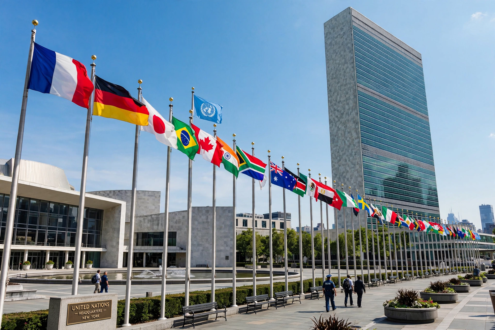

Non-interference, or non-intervention, is a principle of international law holding that states must not intervene in the internal affairs of other states in matters within their domestic jurisdiction, particularly by coercive means. Together with the sovereign equality of states, it is a corollary of state sovereignty and is enshrined in Article 2(7) of the Charter of the United Nations, which bars the UN from intervening in matters essentially within domestic jurisdiction, subject to the Security Council's enforcement powers under Chapter VII.
The principle developed from the Peace of Westphalia's settlement of religious non-interference through eighteenth-century writers such as Vattel. In the UN era it was elaborated in the General Assembly's Declaration on the Inadmissibility of Intervention (1965) and the Friendly Relations Declaration (1970), which prohibits intervention "for any reason whatever" in the political, economic and cultural elements of another state. In the Nicaragua case (1986), the International Court of Justice treated non-intervention as part of customary international law, defining prohibited intervention as coercion bearing on matters a state is free to decide — its political, economic, social and cultural system and foreign policy.
Non-interference goes beyond the prohibition on the use of force: economic coercion, support for armed opposition groups, cyber operations and election interference have all been analysed under it. Purely persuasive diplomacy, criticism and conditional offers of trade or aid are generally not "intervention" because they lack the element of coercion, though the line is contested. The principle also restrains assertions of extraterritorial jurisdiction where they effectively dictate another state's internal policy choices.
Non-interference is a foundational norm of ASEAN — the "ASEAN Way" — and appears in China's Five Principles of Peaceful Coexistence (1954), in the charters of the African Union (partly qualified by the AU's right to intervene in grave circumstances) and the Organization of American States, and in Latin America's Calvo and Drago doctrines limiting intervention to collect debts or protect nationals.
The principle is in recurring tension with human rights enforcement, humanitarian intervention and the "responsibility to protect" doctrine endorsed at the 2005 World Summit, which treats sovereignty as conditional on protecting populations from mass atrocities. Critics of strict non-interference say it shields abusive governments; its defenders say it protects weaker states from domination by stronger ones and remains the default rule of the international order.
See also: Sovereignty, Extraterritorial jurisdiction, Responsibility to protect, United Nations.